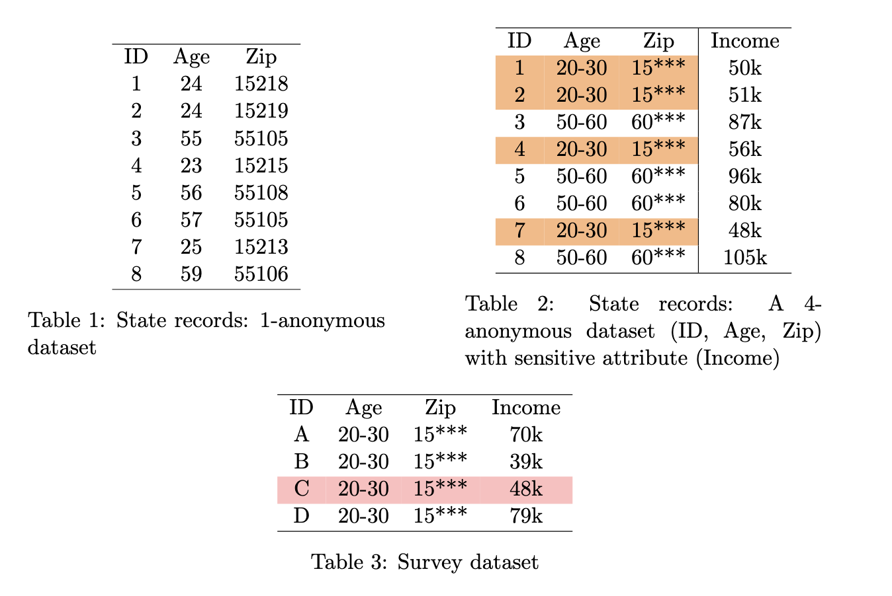

A Brief Introduction to Differential Privacy
In this blog post, I discuss Differential Privacy, a mathematical definition of privacy that has grown in popularity over the last decade. This post is meant to give the reader an understanding of what privacy is, why historical techniques fail, and what Differential Privacy offers. I recommend checking out the references at the bottom of this page if you are interested in learning more!
What is Privacy?
Society today is highly data-driven—through social media interactions, google searches, credit card transactions, healthcare visits, surveys, and other mediums, personal data is continuously collected and stored for analysis. With this comes the need for privacy and security, as many of these datasets contain sensitive information or can be used as a means to access sensitive information. Unfortunately, privacy breaches are not uncommon and can have serious effects. Take, for instance, the Yahoo data breaches in 2013 and 2014. It is estimated hackers exposed private information—including names, emails addresses, phone numbers, birth dates, and security questions—of all three billion Yahoo accounts (Perlroth 2017). However, privacy breach does not necessarily have to be the result of a hacker gaining unauthorized data access. For example, an AI company Scatter Lab trained a chatbot using messaging data from users on South Korea’s largest text messaging service, KakaoTalk. This chatbot then exposed sensitive information upon implementation, reproducing conversations from the training data (Fioretto, Hentenryck, and Ziani 2024). This demonstrates privacy breaches can also occur even without direct access to underlying datasets.
The main goal of privacy protection techniques is to release data that conceal sensitive attributes at the individual level and group level, while at the same time keeping as much information as possible to allow for accurate data analysis. In the ideal world, no one would be able to learn any information about a specific individual from the privatized computation. However, this makes data analysis impossible. As a result, privacy represents the goal of learning as little as possible about individuals. In other words, the goal of privacy is to ensure one can learn almost nothing new about an individual that could not have been inferred had they not shared their data (Fioretto, Hentenryck, and Ziani 2024).
Many privacy techniques fail when they don’t properly identity particular attacks that should be resisted. Fioretto et al. (2024) conclude strong privacy techniques should hold four main properties: compositionality, post-processing immunity, group privacy, and quantifiable privacy accuracy tradeoffs. Compositionality signifies that repeated analyses cannot together break privacy safeguards—the protections should hold when the datasets are analyzed multiple times or datasets contain overlapping information. Post-processing immunity denotes once the original data has been privatized with a privacy-preserving mechanism, all future transformations or analysis of the privatized data cannot reduce privacy. Group privacy guarantees that the privacy mechanism still protects individuals even when data are provided at the group level. More information is able to be encoded as group size increases, and group privacy seeks to protect individuals in these groups from being identified and harmed. Finally, the privacy method should have quantifiable privacy-accuracy tradeoffs, meaning should measure how much accuracy is forgone for a given level of privacy. We further touch on each of these four components of privacy throughout the blog post.
Differential Privacy, developed by Cynthia Dwork et al. in 2006, offers a formal and mathematical definition of privacy. It is now widely regarded as the gold standard for privacy protection in statistical analyses and dataset releases (Fioretto, Hentenryck, and Ziani 2024). Differential Privacy guarantees that the presence or absence or any individual record in a database does not significantly affect the outcome of any computation that can be performed on the data. Perhaps the most powerful aspect of Differential Privacy is that this guarantee holds even if an adversary—an entity trying to deduce private information about individuals through data analysis—has unlimited computing power and complete knowledge of the algorithm and system used to collect and analyze the data. In other words, Differential Privacy ensures future-proof protection (Fioretto, Hentenryck, and Ziani 2024).
In this blog post, we start by discussing historical measures of privacy and their flaws. We then define Differential Privacy in mathematical terms, its theoretical guarantees, and explain the Laplace and Exponential mechanisms. We conclude by briefly covering the difficulty of choosing the level of privacy to guarantee, as well as discussing challenges that come with applying Differential Privacy to health data.
Historical Measures of Privacy
When thinking of privacy, what may immediately come to mind is anonymization. Anonymization—the process of removing or masking identifiers to prevent the recovery of personal identities—has been used in many applications, including the release of medical datasets under the Health Insurance Portability and Accountability Act (HIPAA) standards (Fioretto, Hentenryck, and Ziani 2024). We can show that anonymization is not always enough to conceal the identity of those in the dataset from adversaries with a real-life example. In the mid-1990s, a Massachusetts government agency in charge of purchasing health insurance for state employees released anonymized health data with the goal of promoting medical research. They removed the names, addresses, and social security numbers of individuals, while keeping other attributes they considered unidentifiable such as sex, zip code, and date of birth. MIT graduate student, Dr. Latanya Sweeney, cross-referenced this datset with voter registration records and was able to identify Governor William Weld’s medical records and mail them to his home. She did this through a linkage attack, first finding individuals in both datasets with Governor Weld’s date of birth (6), then keeping only male individuals (3), of which only one resided in his zip code. Dr. Sweeney went on to conclude 87% of the United States population has reported characteristics that make them unique based on these three identifiers (Fioretto, Hentenryck, and Ziani 2024). The released anonymized dataset could be combined with other publicly available datasets to learn private information about individuals and break the original guarantees, indicating a failure of post-processing immunity.
Dr. Latanya Sweeney and Professor Pierangela Samarati introduced k-anonymity (Samarati and Sweeney 1998) in response to the failures of anonymization. A dataset is \(k\)-anonymous if every record is indistinguishable from at least \(k\)-1 other records for a set of quasi-identifiers. The dataset displayed in Table 1 exhibits 1-anonymity, as every individual is unique from the others on the basis of age and zip code. The first three columns of this dataset are transformed to provide 4-anonymity in Table 2, as there are four individuals of age 20-30 with zip code 15***, and four individuals of age 50-60 with zip code 60***. We are unable to distinguish between any of the \(k\) individuals with the same quasi-identifiers. However, to achieve this increased level of privacy, we have a loss of utility. We no longer have exact zipcodes or ages of individuals, which could make certain analyses difficult. Additionally, \(k\)-anonymization fails to provide group privacy and compositionality. In this situation, group privacy does not hold because personal details can be assumed about a person without directly identifying anyone. For instance, one could cross-reference with publicly available data (for example, voter records) to know who the four individuals of age 20-30 are in the state records from Table 2. If an adversary is trying to deduce the income of a particular person, they know it must fall in the range of $48,000-$56,000. Compositionality also does not hold. Suppose it is known that a person, call them Fred, participated in a survey that gathered income information. The results of the survey, which also has 4-anonymity, are displayed in Table 3. An adversary can cross reference the survey with the state records to find a unique match. Individual C from the survey dataset is the only individual in both datasets of age 20-30 with zip code 15*** that makes 48k. Therefore, individual C must be Fred. This example shows how privacy guarantees of \(k\)-anonymity may not hold when datasets are combined, motivating the need for a more protective privacy technique.

Mathematical Definitions
The previous examples demonstrate the need for a privacy technique that provides compositionality, post-processing immunity, and group privacy. Differential Privacy provides the answer. Differential Privacy is a mathematical framework for measuring and bounding the individuals’ privacy risks in a computation (Fioretto, Hentenryck, and Ziani 2024). It guarantees that the presence or absence or any individual record in a database does not significantly affect the outcome of any computation that can be performed on the data. We now go through the math that allows for the guarantees that Differential Privacy provides. These results are largely drawn from (Fioretto, Hentenryck, and Ziani 2024).
First, let \(D\) be a dataset and \(\mathcal{D}\) be the set of all possible datasets. Let a mechanism represent any computation that can be performed on the data, and let \(\mathcal{R} \subseteq \mathbb{R}^r\) be a real vector space. Two datasets, \(D\) and \(D'\), are defined to be adjacent if, by either adding or removing the data of a single individual, the two datasets are equivalent. In other words, adjacency \(D \sim D'\) holds if \(|D\Delta D'| = 1\), where \(\Delta\) is the symmetric difference of two sets. In order to consider how a particular mechanism changes with the participation or absence of a given individual, adjacency is needed.
Global sensitivity is the way to quantify the impact of data from a single individual on a mechanism. To do so, it measures how much the output of a function \(f: \mathcal{D} \to \mathcal{R}\) can change when an individual’s data is added or removed from the dataset. Mathematically, it is defined as the maximum difference in the output \(f\) over all pairs of adjacent datasets \(D \sim D' \in \mathcal{D}\), measured with respect to the \(\ell_p\) norm:
\[\Delta_p f = \underset{D \sim D'}{\max}\Vert f(D) - f(D') \Vert_p.\]
The result \(\Delta_p f\) provides a basis for determining the amount of noise to add in order for the function’s output to obtain the desired level of privacy. For example, say the mechanism was to compute the average age in a dataset, and that the range \(A\) of possible age values is 0-100. The global sensitivity of this mechanism would be
\[ \Delta_p f = \frac{\max(A) - \min(A)}{|D|} = \frac{100}{|D|} \tag{1}\]
A differentially private mechanism adds random noise—by an amount given by the global sensitivity—or makes randomized choices to map a dataset to a distribution. The differentially private output is then a single random sample taken from the distribution. More formally, a randomized mechanism \(\mathcal{M}: \mathcal{D} \to \mathcal{R}\) with domain \(\mathcal{D}\) and range \(\mathcal{R}\) is (\(\epsilon, \delta)\)-differentially private if, for any event \(S \subseteq \mathcal{R}\) and any pair \(D, D' \in \mathcal{D}\) of adjacent datasets:
\[ Pr[\mathcal{M}(\mathcal{D}) \in S] \leq \exp(\epsilon) Pr[\mathcal{M}(D') \in S] + \delta \tag{2}\]
where the probability is calculated over the randomness of \(\mathcal{M}\). In Equation 2, \(\epsilon \geq 0\) represents the privacy loss, with values closer to 0 indicating strong privacy. Parameter \(\delta\) represents a margin of error or failure threshold.
Let \(\delta=0\) temporarily. If \(\epsilon=0\), \(Pr[\mathcal{M}(\mathcal{D}) \in S] = Pr[\mathcal{M}(D') \in S]\), meaning the output of \(f: \mathcal{D} \to \mathcal{R}\) is independent of and does not use the input dataset \(D\) or \(D'\). There is perfect privacy, but no utility—we do not gain any insight from the data. As a result, we typically think of situations where \(\epsilon\) approaches zero, forcing the distributions \(\mathcal{M}(D)\) and \(\mathcal{M}(D')\) to be nearly identical. The choice of \(\epsilon\) is further discussed in Section 4. A mechanism satisfying \((\epsilon, 0)\)-differential privacy is called a pure differentially private or \(\epsilon\)-differentially private mechanism. Parameter \(\delta\) is not always chosen to be 0 and represents the maximum probability that the differential privacy guarantee does not hold. It is often chosen to be a very small value, usually much smaller than \(\frac{1}{N}\), where \(N\) is the size of the dataset.
Properties of Differential Privacy
We next discuss mathematically how Differential Privacy satisfies the desired components of privacy—composition, post-processing, and group privacy. These properties hold for any mechanism that satisfies Equation 2.
Composition
Composition guarantees that Differential Privacy remains when combining multiple differentially private mechanisms. It aggregates the privacy guarantees of individual mechanisms to analyze the overall privacy loss of an algorithm, a process known as privacy accounting. Dwork and Roth (2014) found the following:
Theorem 3.1: Let \(\mathcal{M}_i: \mathcal{D} \to \mathcal{R}_i\) be an \(\epsilon_i\)-differentially private mechanism for \(i \in \{1, 2\}\). Then, their composition, defined as \(\mathcal{M}(D) = (\mathcal{M}_1(D), \mathcal{M}_2(D))\), is \((\epsilon_1 + \epsilon_2)\)-differentially private.
Proof: For any \((R_1, R_2) \subseteq \mathcal{R}_1 \times \mathcal{R}_2\) and any two neighboring datasets \(D \sim D'\),
\[ \begin{aligned} \frac{\text{Pr}[\mathcal{M}(D) \in (R_1, R_2)]}{\text{Pr}[\mathcal{M}(D') \in (R_1, R_2)]} &= \frac{\text{Pr}[\mathcal{M}_1(D) \in R_1] \, \text{Pr}[\mathcal{M}_2(D) \in R_2]}{\text{Pr}[\mathcal{M}_1(D') \in R_1] \, \text{Pr}[\mathcal{M}_2(D') \in R_2]} \\ &= \left( \frac{\text{Pr}[\mathcal{M}_1(D) \in R_1]}{\text{Pr}[\mathcal{M}_1(D') \in R_1]} \right) \left( \frac{\text{Pr}[\mathcal{M}_2(D) \in R_2]}{\text{Pr}[\mathcal{M}_2(D') \in R_2]} \right) \\ &\leq \exp(\epsilon_1)\exp(\epsilon_2) \\ &= \exp(\epsilon_1 + \epsilon_2) \end{aligned} \tag{3}\]
In Equation 3, we assume independence between \(\mathcal{M}_1\) and \(\mathcal{M}_2\). This assumption is usually incorrect, but in practice it is a good enough approximation (Desfontaines 2019). We then use the assumption \(M_i\) is \(\epsilon_i\) differentially private, meaning \(\frac{\text{Pr}[\mathcal{M}_i(D) \in R_i]}{\text{Pr}[\mathcal{M}_i(D') \in R_i]} \leq \exp(\epsilon_i)\). Theorem 3.1 can be generalized to \(k\) differentially private mechanisms. If \(\mathcal{M}_i: \mathcal{D} \to \mathcal{R}_i\) is an \(\epsilon_i\)-differentially private mechanism for \(i = 1, \dots, k\), then composition \(\mathcal{M}(D) = (\mathcal{M}_1(D), \dots, \mathcal{M}_k(D))\) is \((\sum_{i=1}^k \epsilon_i)\)-differentially private.
Post-processing immunity
Post-processing immunity ensures that a data analyst cannot compute a function of the output of a private algorithm \(\mathcal{M}\) and make it less differentially private (Dwork and Roth 2014).
Theorem 3.2: Let \(\mathcal{M}: \mathcal{D} \to \mathcal{R}\) be an \(\epsilon\)-differentially private mechanism and \(g: \mathcal{R} \to \mathcal{R}'\) be a data-independent mapping. The mechanism \(g \space\circ \mathcal{M}\) is \(\epsilon\)-differentially private.
Proof: The proof can be done for a deterministic function \(g: \mathcal{R} \to \mathcal{R}'\). Any randomized mapping can be decomposed into a convex combination of deterministic functions. The result follows because a convex combination of differentially private mechanisms is differentially private. Fix any pair of datasets \(D\) and \(D'\) with \(\Vert D-D'\Vert_1 \leq 1\), and fix any event \(S \subseteq \mathcal{R}'\). Let \(T = \{r \in \mathcal{R}: g(r) \in S\}\). Then:
\[\begin{aligned} \text{Pr}[g(\mathcal{M}(D)) \in S] &= \text{Pr}[\mathcal{M}(D) \in T] \\ &\leq \exp(\epsilon)\text{Pr}[\mathcal{M}(D') \in T] + \delta \\ &= \exp(\epsilon) \text{Pr}[g(\mathcal{M}(D')) \in S]+\delta \end{aligned}\]
which is what we wanted.
Group Privacy
Group privacy takes a privacy guarantee from the individual level to the group level. For example, group privacy addresses privacy in surveys that include multiple family members.
Theorem 3.3: Let \(\mathcal{M}: \mathcal{D} \to \mathcal{R}\) be an \(\epsilon\)-differentially private mechanism and let datasets \(D\) and \(D'\) differ in \(k\) entries. Then for all \(S \subseteq \mathcal{R}\):
\[\text{Pr}[\mathcal{M}(D) \in S] \leq \exp(k\epsilon) \text{Pr}[\mathcal{M}(D') \in S].\]
Proof: Assume \(\mathcal{M}\) satisfies \((\epsilon, 0)\)-Differential Privacy. If \(D\) and \(D'\) are two datasets differing by \(k\) rows, we can construct \(D=D^{(0)}, D^{(1)}, D^{(2)}, \dots, D' = D^{(k)}\) where \(D^{(i)} \sim D^{(i+1)}\) for \(i=0, \dots, k-1\). These are intermediate datasets obtained when going from \(D\) to \(D'\) by changing one entry at a time successively. Then, by the Differential Privacy guarantee of \(\mathcal{M}\), for any \(R \subseteq \mathcal{R}\) and \(i \in [k-1]\),
\[\begin{aligned} \text{Pr}[\mathcal{M}(D) \in R] &= \text{Pr}[\mathcal{M}(D^{(0)}) \in R] \\ &\leq \exp(\epsilon) \text{Pr}[\mathcal{M}(D^{(1)}) \in R] \\ &\leq \exp(2\epsilon) \text{Pr}[\mathcal{M}(D^{(2)}) \in R] \\ &\quad \quad \quad \quad \quad \quad \vdots \\ &\leq \exp(k\epsilon) \text{Pr}[\mathcal{M}(D^{(k)}) \in R] \\ &= \exp(k\epsilon) \text{Pr}[\mathcal{M}(D') \in R]. \\ \end{aligned}\]
The Laplace and Exponential Mechanism
Having now introduced Differential Privacy and proved its guarantees, we discuss how noise is added to the data so that these guarantees hold. The Laplace mechanism is a differentially private mechanism based on the Laplace distribution for answering numeric queries (Dwork et al. 2006). It functions by computing the output of query \(f\) and then adding random noise drawn from the Laplace distribution independently to each of the \(d\) dimensions of the query response. The Laplace distribution has mean 0, scale \(b\), and probability density function \(\text{Lap}(x|b) = \frac{1}{2b}e^{-\frac{|x|}{b}}\). Scale \(b\) is calculated by the global sensitivity \(\Delta_p f\) divided by \(\epsilon\) (Fioretto, Hentenryck, and Ziani 2024). The Laplace mechanism achieves \((\epsilon,0)\)-Differential Privacy by bounding the ratio of output probabilities between \(D\) and \(D'\) by \(\exp(\epsilon)\).
The exponential mechanism (McSherry and Talwar 2007) is capable of performing selection privately while also preserving the quality of the selection made. It is intended to be used in situations where we wish to choose the “best” response, but adding noise directly to the computed quantity can completely ruin its value. For example, at an auction, the goal is to maximize revenue. If we were to add a small amount of positive noise to the optimal price in order to protect the privacy of the bid, it could dramatically reduce the resulting revenue. The exponential mechanism takes a set of objects \(\mathcal{H}\), a dataset \(D \in \mathcal{D}\), and a utility function \(s: \mathcal{D} \times \mathcal{H} \to \mathbb{R}\) and outputs \(h \in \mathcal{H}\) with probability proportional to \(\exp\left(\frac{\epsilon s(D, h)}{2 \Delta s}\right)\), where the global sensitivity of the utility function is \(\Delta s \equiv \underset{h \in \mathcal{H}}{\max} \underset{D \sim D'}{\max}|s(D, h) - s(D', h)|\). The exponential mechanism achieves \((\epsilon, 0)\)-Differential Privacy.
Application of the Laplace Mechanism
Suppose we return to Equation 1 where we define the global sensitivity of a mechanism computing the average age in a dataset. We now show how the Laplace mechanism can be applied in practice, using a dataset of 1,000 individuals of ages 0 to 100 years. We first compute the global sensitivity,
\[\Delta f = \frac{\max \text{age} - \min \text{age}}{n} = \frac{100}{1,000} = 0.1.\]
We then select privacy parameter \(\epsilon=0.5\) and add noise drawn from the Laplace distribution with the scale parameter \(\frac{\Delta f}{\epsilon}\).
\[\text{noise} \sim \text{Lap}\left(\frac{\Delta f}{\epsilon}\right) = \left(\frac{0.1}{0.5}\right) = \text{Lap(0.2)}\]
The differentially private query then reports \(f\)(data) + noise. For instance, if the average was truly 43.8 years, and we drew 0.13563 using R’s rlaplace(n = 1, location = 0, scale = 0.2), we would report the average age as 43.936 years.
Application of the Exponential Mechanism
The following situation is adapted from (Dwork and Roth 2014). A retailer is selling bedframes and there are three potential buyers, \(A\), \(B\), and \(C\), each of whom have a maximum price they are willing to pay (their valuation). The buyers keep their valuations to themselves to avoid disclosing private information about their finances. The retailer wants to determine a sale price to maximize their total revenue without revealing the valuations of the buyers in the process. Suppose the valuations of the buyers \(A\), \(B\), and \(C\) are $400, $700, $1,000, respectively. The following prices options would give the corresponding revenues:
Price of $400: Revenue = $400 \(\times\) 3 buyers = $1,200
Price of $700: Revenue = $700 \(\times\) 2 buyers = $1,400
Price of $1,000: Revenue = $1,000 \(\times\) 1 buyers = $1,000
To maximize revenue, the seller should set the price at $700. If the seller added random noise to the valuations to preserve privacy, however, \(B\)’s valuation could become $701 (while remaining $700 in reality), leading only \(C\) to purchase the bed at the price of $701 and the seller to make $701 instead of $\(1,400\). To account for this situation, the exponential mechanism is useful. The seller can define utility function \(s(D,h)\) that calculates the total revenue generated at a price \(h\), given the buyers’ valuations in dataset \(D\). The exponential mechanism then selects a price \(h\) with probability proportional to \(\exp\left(\frac{\epsilon s(D, h)}{2 \Delta s}\right)\). As \(\epsilon \to 0\), all prices become equally likely independently of the buyers’ valuations \(D\), leading to perfect privacy. As \(\epsilon\) increases, more importance is given to the utility function \(s(D, h)\), providing higher utility to the seller but less privacy to the buyer.
Choosing Epsilon
Throughout this paper, we have discussed \(\epsilon\) as the privacy tuning parameter. But how do we choose \(\epsilon\)? In reality, there is little understanding of what the optimal value for \(\epsilon\) is for a given system or classes of systems, purposes, data, etc (Dwork, Kohli, and Mulligan 2019). Cynthia Dwork, Nitin Kohli, and Dierdre Mulligran conducted interviews with eleven employees at seven organizations known to be using Differential Privacy in 2016. Three organizations were technology companies, and the remainder were in government, telecommunications, energy, and academic research. The goal of the interviews was to learn more about the successes and challenges of Differential Privacy and how these organizations chose their \(\epsilon\). A primary challenge reiterated by the interviewees was the difficulty of explaining privacy budgets to those in their organization not familiar with the mathematical model of Differential Privacy. These non-experts may struggle to grasp what it means for the privacy budget to be exhausted. In terms of choosing \(\epsilon\), the interviewers found a wide variety of methods being implemented. One method was to use simulation to find a value of \(\epsilon\) that provided sufficient utility to meet the institution’s product and business goals. Another method was to use a threat model to understand what threats to privacy the institution could face, choose epsilon based on the acceptable amount of privacy loss, and then assess accuracy. Other interviewees said that their \(\epsilon\) was chosen completely arbitrarily, or they were using a value of \(\epsilon\) from a previous implementation that had been passed down to them. Of these methods, only the threat model made a distinct effort to put privacy protection ahead of utility.
The ability for an organization to choose \(\epsilon\) is both a blessing and a curse. If chosen correctly, the organization can appropriately balance privacy and utility in the context of their data. However, it also allows organizations to state they are practicing privacy, while in reality choosing a large \(\epsilon\) that offers little protection. Dwork et al. argue that broad knowledge of \(\epsilon\) across firms is important for two reasons. First, public knowledge can support shared learning. If some individuals are choosing \(\epsilon\) arbitrarily, sharing of knowledge can help promote more informed choices. Second, public sharing of \(\epsilon\) can promote higher quality implementations of privacy—firms cannot hide behind a very high \(\epsilon\) without criticism.
Application of Differential Privacy to Health Data
Differential Privacy is applied across many domains, such as technology, government, education, and health. While Differential Privacy has its advantages—compositionality, post-processing immunity, group privacy, quantifiable privacy-accuracy tradeoffs—it is not without its challenges, especially as a newer privacy method. Below, we list a few challenges of the application of Differential Privacy to health data (Dankar and El Emam 2012).
Users of health data (e.g. biostatisticians, epidemiologists) are accustomed to data publishing, where the data is non-interactive and can be run through preexisting programs (e.g. SAS programs). It would be hard to convince analysts to move to a less understood interactive system.
The healthcare sector often has specific privacy laws in many jurisdictions, which are often based on precedent. There is a significant amount of precedent for different values of \(k\) for \(k\)-anonymity. A data custodian can point to history to justify their choice of \(k\), whereas there is little intrinsic meaning for the value of \(\epsilon\).
Many fields in health data are correlated or have natural constraints. For example, certain treatments or drugs go together. Adding noise to the data may create results that do not make practical sense.
It is hard to explain differential privacy and what exactly \(\epsilon\) means. Those disclosing their health data often want to know how it going to be protected, and explaining Differential Privacy and the value of \(\epsilon\) to a patient is going to be difficult.
Conclusion
In a data driven world, having appropriate privacy guarantees and techniques is incredibly important. First developed by Cynthia Dwork and her collaborators in 2006, Differential Privacy offers a formal and mathematical definition of privacy. It guarantees that the presence or absence or any individual record in a database does not significantly affect the outcome of any computation that can be performed on the data. Offering properties including compositionality, post-processing immunity, group privacy, and quantifiable privacy accuracy guarantees, Differential Privacy is in many cases regarded as the gold standard for privacy protection in statistical analyses and dataset releases. Many fields, including government, technology, education, energy, and academia, have adopted Differential Privacy as their primary privacy technique. However, it is not without flaws. The value of \(\epsilon\), the privacy tuning parameter, is not interpretable to the general population and difficult to choose for even those with experience applying Differential Privacy in the real world. As Differential Privacy becomes more widespread, it will be interesting to see how its transparency and interpretability evolves.